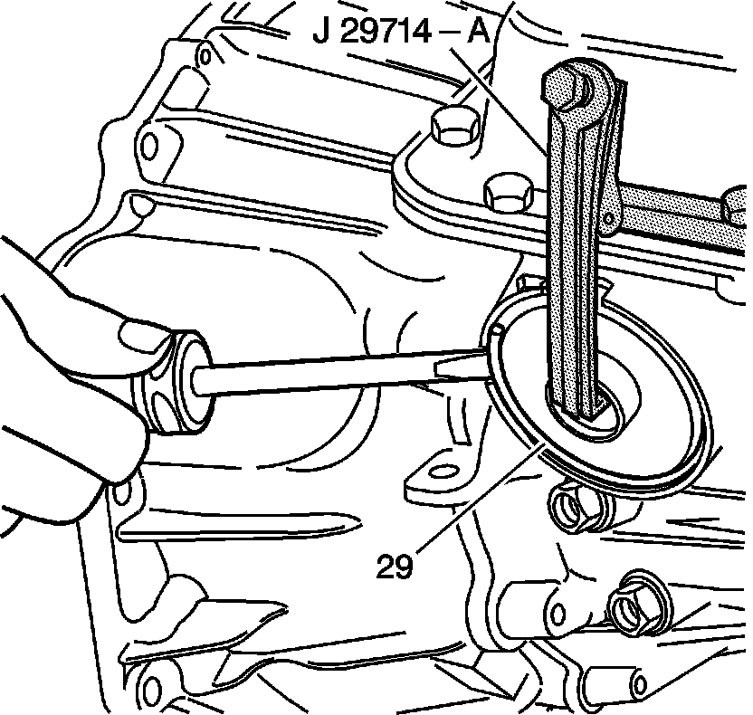

2-4 Servo Assembly Installation
2-4 Servo Assembly Installation
Tools Required
^ J 22269-01 Accumulator and Servo Piston Remover
^ J 29714-A Servo Cover Depressor
1. Inspect the 4th apply piston (25), the 2-4 servo cover (28), the 2nd apply piston (17), and the servo piston inner housing (20) for the following conditions:
^ Cracks
^ Scoring
^ Burrs and nicks
2. Install the following seals:
^ The 4th apply piston outer oil seal ring (26) on the 4th apply piston (25).
^ The 2-4 servo cover O-ring seal (27) on the 2-4 servo cover (28).
^ The 2nd apply piston outer (18) and inner (19) oil seal rings on the 2nd apply piston (17).
^ The O-ring seal (21) on the servo piston inner housing (20).
3. Install the servo cushion outer spring (16), the servo cushion inner spring (105) (model dependent) and the cushion spring retainer (15) in the 2nd apply piston (17).
4. Use the J 22269-01 and compress the second apply piston assembly (17).
5. Install the second apply piston retaining ring (14).
6. Assemble the 2-4 servo components in the order shown: (12-15, 17, 20, 22-25, 28, 29).

7. Install the 2-4 servo assembly into the 2-4 servo bore.
8. Install the J 29714-A.
9. Tighten the bolt on the J 29714-A in order to compress the servo cover.

10. Install the servo cover retaining ring (29).